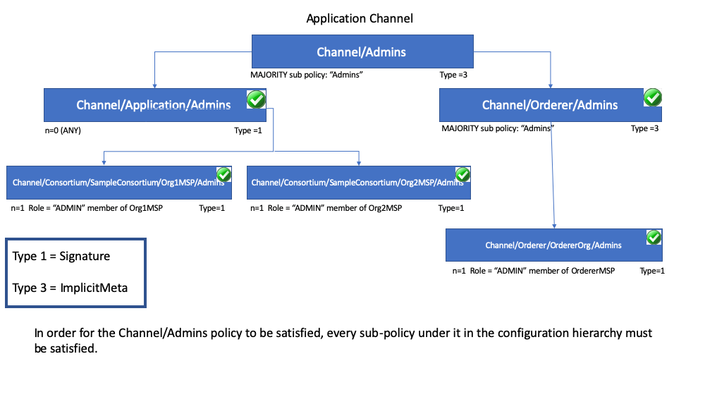

Policies¶
Audience: Architects, application and smart contract developers, administrators
In this topic, we'll cover:
- What is a policy
- Why are policies needed
- How are policies implemented
- How do you write a policy in Fabric
- Fabric chaincode lifecycle
- Overriding policy definitions
What is a policy¶
At its most basic level, a policy is a set of rules that define the structure for how decisions are made and specific outcomes are reached. To that end, policies typically describe a who and a what, such as the access or rights that an individual has over an asset. We can see that policies are used throughout our daily lives to protect assets of value to us, from car rentals, health, our homes, and many more.
For example, an insurance policy defines the conditions, terms, limits, and expiration under which an insurance payout will be made. The policy is agreed to by the policy holder and the insurance company, and defines the rights and responsibilities of each party.
Whereas an insurance policy is put in place for risk management, in Hyperledger Fabric, policies are the mechanism for infrastructure management. Fabric policies represent how members come to agreement on accepting or rejecting changes to the network, a channel, or a smart contract. Policies are agreed to by the channel members when the channel is originally configured, but they can also be modified as the channel evolves. For example, they describe the criteria for adding or removing members from a channel, change how blocks are formed, or specify the number of organizations required to endorse a smart contract. All of these actions are described by a policy which defines who can perform the action. Simply put, everything you want to do on a Fabric network is controlled by a policy.
Why are policies needed¶
Policies are one of the things that make Hyperledger Fabric different from other blockchains like Ethereum or Bitcoin. In those systems, transactions can be generated and validated by any node in the network. The policies that govern the network are fixed at any point in time and can only be changed using the same process that governs the code. Because Fabric is a permissioned blockchain whose users are recognized by the underlying infrastructure, those users have the ability to decide on the governance of the network before it is launched, and change the governance of a running network.
Policies allow members to decide which organizations can access or update a Fabric network, and provide the mechanism to enforce those decisions. Policies contain the lists of organizations that have access to a given resource, such as a user or system chaincode. They also specify how many organizations need to agree on a proposal to update a resource, such as a channel or smart contracts. Once they are written, policies evaluate the collection of signatures attached to transactions and proposals and validate if the signatures fulfill the governance agreed to by the network.
How are policies implemented¶
Policies are defined within the relevant administrative domain of a particular action defined by the policy. For example, the policy for adding a peer organization to a channel is defined within the administrative domain of the peer organizations (known as the Application group). Similarly, adding ordering nodes in the consenter set of the channel is controlled by a policy inside the Orderer group. Actions that cross both the peer and orderer organizational domains are contained in the Channel group.
Typically, these policies default to the "majority of admins" of the group they fall under (a majority of peer organization admins for example, or in the case of Channel policies, a majority of both peer organizations and orderer organizations), though they can be specified to any rule a user wishes to define. Check out Signature policies for more information.
Access control lists (ACLs)¶
Network administrators will be especially interested in the Fabric use of ACLs,
which provide the ability to configure access to resources by associating those
resources with existing policies. These "resources" could be functions on system
chaincode (e.g., "GetBlockByNumber" on the "qscc" system chaincode) or other
resources (e.g.,who can receive Block events). ACLs refer to policies
defined in an application channel configuration and extends them to control
additional resources. The default set of Fabric ACLs is visible in the
configtx.yaml file under the Application: &ApplicationDefaults section but
they can and should be overridden in a production environment. The list of
resources named in configtx.yaml is the complete set of all internal resources
currently defined by Fabric.
In that file, ACLs are expressed using the following format:
# ACL policy for chaincode to chaincode invocation
peer/ChaincodeToChaincode: /Channel/Application/Writers
Where peer/ChaincodeToChaincode represents the resource being secured and
/Channel/Application/Writers refers to the policy which must be satisfied for
the associated transaction to be considered valid.
For a deeper dive into ACLS, refer to the topic in the Operations Guide on ACLs.
Smart contract endorsement policies¶
Every smart contract inside a chaincode package has an endorsement policy that specifies how many peers belonging to different channel members need to execute and validate a transaction against a given smart contract in order for the transaction to be considered valid. Hence, the endorsement policies define the organizations (through their peers) who must “endorse” (i.e., approve of) the execution of a proposal.
Modification policies¶
There is one last type of policy that is crucial to how policies work in Fabric,
the Modification policy. Modification policies specify the group of identities
required to sign (approve) any configuration update. It is the policy that
defines how the policy is updated. Thus, each channel configuration element
includes a reference to a policy which governs its modification.
How do you write a policy in Fabric¶
If you want to change anything in Fabric, the policy associated with the resource
describes who needs to approve it, either with an explicit sign off from
individuals, or an implicit sign off by a group. In the insurance domain, an
explicit sign off could be a single member of the homeowners insurance agents
group. And an implicit sign off would be analogous to requiring approval from a
majority of the managerial members of the homeowners insurance group. This is
particularly useful because the members of that group can change over time
without requiring that the policy be updated. In Hyperledger Fabric, explicit
sign offs in policies are expressed using the Signature syntax and implicit
sign offs use the ImplicitMeta syntax.
Signature policies¶
Signature policies define specific types of users who must sign in order for a
policy to be satisfied such as OR('Org1.peer', 'Org2.peer'). These policies are
considered the most versatile because they allow for the construction of
extremely specific rules like: “An admin of org A and 2 other admins, or 5 of 6
organization admins”. The syntax supports arbitrary combinations of AND, OR
and NOutOf. For example, a policy can be easily expressed by using
AND('Org1.member', 'Org2.member') which means that a signature from at least
one member in Org1 AND one member in Org2 is required for the policy to be satisfied.
ImplicitMeta policies¶
ImplicitMeta policies are only valid in the context of channel configuration
which is based on a tiered hierarchy of policies in a configuration tree. ImplicitMeta
policies aggregate the result of policies deeper in the configuration tree that
are ultimately defined by Signature policies. They are Implicit because they
are constructed implicitly based on the current organizations in the
channel configuration, and they are Meta because their evaluation is not
against specific MSP principals, but rather against other sub-policies below
them in the configuration tree.
The following diagram illustrates the tiered policy structure for an application
channel and shows how the ImplicitMeta channel configuration admins policy,
named /Channel/Admins, is resolved when the sub-policies named Admins below it
in the configuration hierarchy are satisfied where each check mark represents that
the conditions of the sub-policy were satisfied.

As you can see in the diagram above, ImplicitMeta policies, Type = 3, use a
different syntax, "<ANY|ALL|MAJORITY> <SubPolicyName>", for example:
Admins, which refers to all the Admins policy
below it in the configuration tree. You can create your own sub-policies
and name them whatever you want and then define them in each of your
organizations.
As mentioned above, a key benefit of an ImplicitMeta policy such as MAJORITY
Admins is that when you add a new admin organization to the channel, you do not
have to update the channel policy. Therefore ImplicitMeta policies are
considered to be more flexible as organizations are added. Recall that ImplicitMeta policies ultimately resolve the
Signature sub-policies underneath them in the configuration tree as the
diagram shows.
You can also define an application level implicit policy to operate across organizations, in a channel for example, and either require that ANY of them are satisfied, that ALL are satisfied, or that a MAJORITY are satisfied. This format lends itself to much better, more natural defaults, so that each organization can decide what it means for a valid endorsement.
Further granularity and control can be achieved if you include NodeOUs in your
organization definition. Organization Units (OUs) are defined in the Fabric CA
client configuration file and can be associated with an identity when it is
created. In Fabric, NodeOUs provide a way to classify identities in a digital
certificate hierarchy. For instance, an organization having specific NodeOUs
enabled could require that a 'peer' sign for it to be a valid endorsement,
whereas an organization without any might simply require that any member can
sign.
An example: channel configuration policy¶
Understanding policies begins with examining the configtx.yaml where the
channel policies are defined. We can use the configtx.yaml file in the Fabric
test network to see examples of both policy syntax types. We are going to examine
the configtx.yaml file used by the fabric-samples/test-network sample.
Member Organizations Section¶
The first section of the file defines the organizations that will be members of the channel. Inside each
organization definition are the default policies for that organization, Readers, Writers,
Admins, and Endorsement, although you can name your policies anything you want.
Each policy has a Type which describes how the policy is expressed (Signature
or ImplicitMeta) and a Rule.
The test network example below shows the Org1 organization definition in the
channel, where the policy Type is Signature and the Endorsement: policy rule
is defined as "OR('Org1MSP.peer')". This policy specifies that a peer that is
a member of Org1MSP is required to sign. It is these signature policies that
become the sub-policies that the ImplicitMeta policies point to.
Click here to see an example of an organization defined with signature policies
``` - &Org1 # DefaultOrg defines the organization which is used in the sampleconfig # of the fabric.git development environment Name: Org1MSP # ID to load the MSP definition as ID: Org1MSP MSPDir: ../organizations/peerOrganizations/org1.example.com/msp # Policies defines the set of policies at this level of the config tree # For organization policies, their canonical path is usually # /Channel/</details>
### Application and Roles Section
The next example shows the `ImplicitMeta` policy type used in the `Application`
section of the `configtx.yaml`. These set of policies lie on the
`/Channel/Application/` path. If you use the default set of Fabric ACLs, these
policies define the behavior of many important features of application channels,
such as who can query the channel ledger, invoke a chaincode, or update a channel
config. These policies point to the sub-policies defined for each organization.
The Org1 defined in the section above contains `Reader`, `Writer`, and `Admin`
sub-policies that are evaluated by the `Reader`, `Writer`, and `Admin` `ImplicitMeta`
policies in the `Application` section. Because the test network is built with the
default policies, you can use the example Org1 to query the channel ledger, invoke a
chaincode, and approve channel updates for any test network channel that you
create.
<details>
<summary>
<strong>Click here to see an example of ImplicitMeta policies</strong>
</summary>
</details>
## Fabric chaincode lifecycle
The Fabric chaincode lifecycle utilizes policies
when chaincode is **approved** by organization members, and when it is **committed**
to the channel.
The `Application` section of the `configtx.yaml` file includes the default
chaincode lifecycle endorsement policy. In a production environment you would
customize this definition for your own use case.